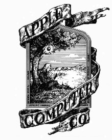

- Isaac Newton, ontdekker van de wet vande zwaartekracht, stond op het eerste logo.
- Apple heeft in 1994 de eerste digitale kleurencamera voor de "gewone man/vrouw" gemaakt:de Apple QuickTake.
- Steve Jobs droeg altijd een zwarte trui met turtleneck van het merk St.Croix, blauwe Levi's 501 spijkerbroek en grijze New Balance 992-schoenen.
- Alle kantoren, winkels en datacenters van Apple draaien in 44 landen voor 100% op hernieuwbare energiebronnen.
- de 'I' in de producten staat voor internet maar ook voor:individual,instruct,inform en inspire.